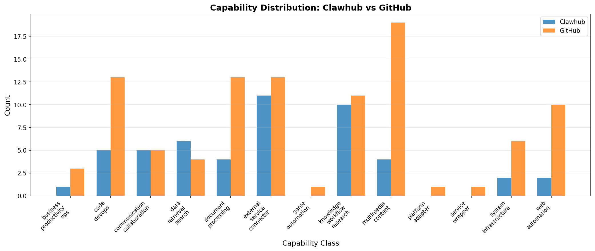
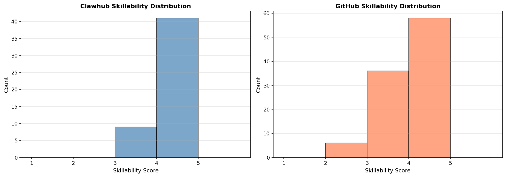
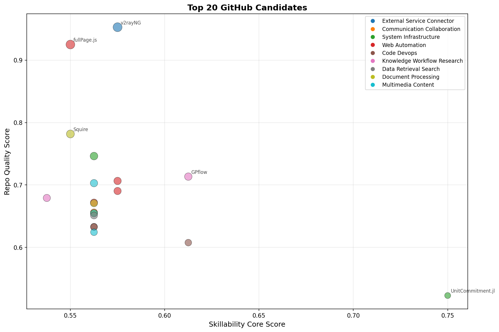

| Rank | Repository | Capability | Skillability | Opportunity Score | Stars |
|---|---|---|---|---|---|
| 1 | 2dust/v2rayNG | External Service Connector | 4.0 | 0.726 | 52,076 |
| 2 | alvarotrigo/fullPage.js | Web Automation | 4.0 | 0.700 | 35,486 |
| 3 | ANL-CEEESA/UnitCommitment.jl | System Infrastructure | 4.0 | 0.659 | 136 |
| 4 | GPflow/GPflow | Knowledge Workflow Research | 4.0 | 0.653 | 1,905 |
| 5 | fastmail/Squire | Document Processing | 4.0 | 0.643 | 4,898 |
| 6 | phoronix-test-suite/phoronix-test-suite | System Infrastructure | 4.0 | 0.636 | 3,002 |
| 7 | joshuayoes/ios-simulator-mcp | Web Automation | 4.0 | 0.628 | 1,731 |
| 8 | vrtgs/thirtyfour | Web Automation | 4.0 | 0.621 | 1,385 |
| 9 | dimforge/kiss3d | Multimedia Content | 3.0 | 0.619 | 1,648 |
| 10 | smallrye/jandex | Code Devops | 4.0 | 0.611 | 441 |
| 11 | plentico/plenti | Web Automation | 3.0 | 0.606 | 1,072 |
| 12 | kenshin54/popline | Document Processing | 4.0 | 0.606 | 1,056 |
| 13 | FedericoBruzzone/tgt | Communication Collaboration | 4.0 | 0.600 | 862 |
| 14 | toppair/peek.nvim | Document Processing | 4.0 | 0.599 | 847 |
| 15 | developer-shivam/FeaturedRecyclerView | Multimedia Content | 3.0 | 0.599 | 845 |
| 16 | chxj1992/kline | Data Retrieval Search | 4.0 | 0.598 | 806 |
| 17 | lightaime/deep_gcns_torch | Knowledge Workflow Research | 3.0 | 0.594 | 1,187 |
| 18 | clojure/tools.namespace | Code Devops | 3.0 | 0.591 | 627 |
| 19 | phenomnomnominal/betterer | Code Devops | 4.0 | 0.591 | 624 |
| 20 | elringus/grass-bending | Multimedia Content | 4.0 | 0.587 | 556 |